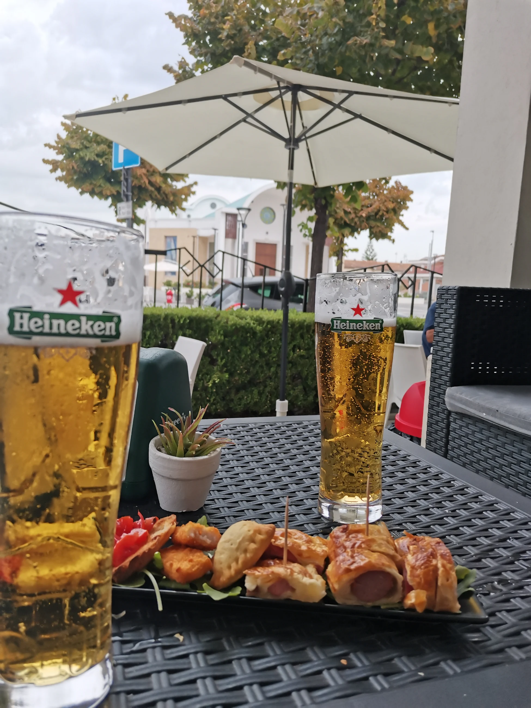

BUONGIORNOIl profumo dei

IL BAR DELLA PIAZZA · NOVA SIRIQui ogni pausa
Qui ogni pausa
diventa un momento.
Dal cornetto caldo del mattino all’aperitivo con gli amici. Tavoli all’aperto, musica, eventi e la piazza davanti.
OGGIDalle 05:00Orario online da confermare
ColazioneCornetti caldi e caffetteria
→02AperitivoDrink e stuzzichini
→03Musica & eventiLe serate in piazza
→LA VIBE DEL CORSOIl posto giusto,
Il posto giusto,
alla tua ora.
Una colazione veloce prima di iniziare. Un tavolo all’ombra per fare due chiacchiere. Un aperitivo da condividere mentre la piazza si riempie.
DehorsIn piazzaAperitiviPer tutti
CI VEDIAMO FUORIUn drink e qualcosa
Un drink e qualcosa
da condividere.
MUSICA · PIAZZA · PERSONELe serate
Le serate
al Corso.
Musica ed eventi animano il locale e la piazza. Nessuna data inventata: per sapere cosa c’è in programma, contatta direttamente il bar.
Chiedi il prossimo evento ↗PASSA A TROVARCISei già
Sei già
quasi qui.
Viale Siris, 69
75020 Nova Siri MT
Apri la mappa ↗+39 320
577 5968
Chiama ora ↗Lun, Mar, Gio, Dom05–00
Mer05–13
Ven, Sab05–01
Possono cambiare. Chiama prima di partire.